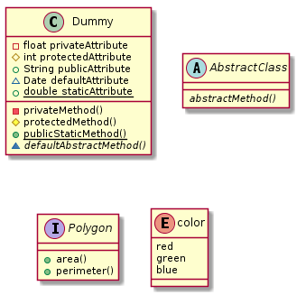
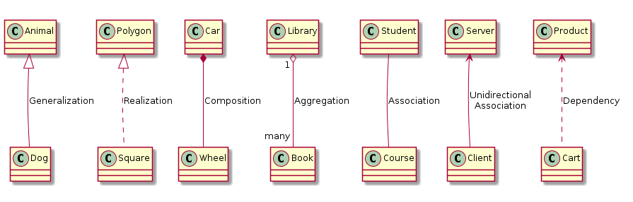
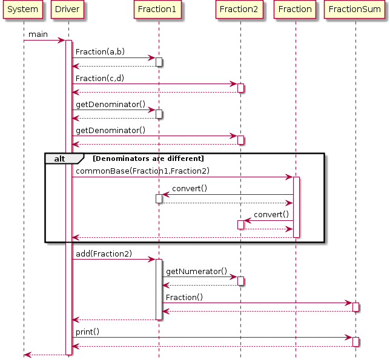

| Prev | Next |
Reading material for UML: UML Tutorial. You can also refer to other resources. Concentrate on general info about UML, class, object and sequence (or interaction) diagrams. Skim through use case, activity, component and package diagrams.
UML Diagrams with PlantUML
A picture is worth a million words. PlantUML is a text-to-uml converter that allow you to construct clear and attractive diagrams in an easy fashion using intuitive syntax. It is available as Eclipse plug-in.
- The prerequisite for installing PlantUML is Graphviz. It can be installed in Linux versions by the command: sudo apt-get install graphviz. - PlantUML can be installed by Help -> Install New Software -> Add - Paste the link http://basar.idi.ntnu.no/svn/tdt4100/anonymous/trunk/updatesite/. - On successful installation, the PlantUML view can be brought by Window -> Show View -> Others - And selecting PlantUML from the list. - Please refer to Official Plant UML Website for complete details. - The complete syntax can be obtained from Plant UML User Guide in case you are unable to connect to the Internet. - UML will be dealt in detail in Software Engineering course. For this course, it is enough if you know to construct class and sequence diagrams for a given scenario. - PlantUML is only a tool to draw neat diagrams. It is user's responsibility to use it in a sensible fashion. Meaningless text will result in non-intuitive diagrams (though syntax is right).
1. Class Diagrams
The class diagram is a static diagram. It represents the static view of an application. Class diagram is typically used for visualizing, describing and documenting different aspects of a system. Some tools also construct source or executable code of the software application from the class diagram.
The class diagram describes the attributes and operations of a class and also the constraints imposed on the system. The class diagrams are widely used in the modelling of object oriented systems.
The class diagram shows a collection of classes, interfaces, associations, collaborations and constraints. It is also known as a structural diagram.
Drawing Class Diagrams with Plant UML
A. Specification of Class
All the input text files for PlantUML starts with @startuml and ends with @enduml.
The below example demonstrates the specification of Dummy class with attributes and methods with different access modifiers, an abstract class, an interface and enum type.
(1) +, #, - and ~ are used for public, protected, private and default respectively. These are
represented by symbols circle, diamond, square and triangle respectively in the diagram.
(2) {static} is used for static attribute/method. This will be shown as underlined.
(3) {abstract} is used for abstract method. This will be shown in italics.
{abstract} can be used for class also in which case that class name will be in italics.
(4) Interface also can be specified using 'interface' keyword.
(5) Enumerated attributes can be specified using 'enum' keyword.
@startuml
class Dummy {
- float privateAttribute
# int protectedAttribute
+ String publicAttribute
~ Date defaultAttribute
+ {static} double staticAttribute
- privateMethod()
# protectedMethod()
+ {static} publicStaticMethod()
~ {abstract} defaultAbstractMethod()
}
abstract class AbstractClass{
{abstract} abstractMethod()
}
interface Polygon {
+ area()
+ perimeter()
}
enum color {
red
green
blue
}
@enduml
This will produce the following class diagram.
B. Specification of Class Relationships
The classes in the class diagram may share different kind of relationship between each other. The following are some of the important relationships. Note that this is not exhaustive.
1. Generalization: An extension relationship between superclass and subclass is specified as follows.
ParentClass <|-- ChildClass
Example: Animal <|-- Dog
2. Realization: An implementation of an interface is specified as follows.
Interface <|-- Implementation
Example: Polygon <|.. Square
3. Composition: A whole-part (Type 1) relationship between two classes is specified as follows.
ContainerClass *-- ContainedClass
Example: Car *-- Wheel, Car "1" *-- "4" Wheel, Library "1" *-- "many" Book
4. Aggregation: A whole-part (Type 2) relationship between two classes is specified as follows.
ContainerClass o-- ContainedClass
Example: MercedesBenz o-- EngineModelXYZ
Difference between composition and aggregation
- Composition implies ContainedClass cannot exist independent of ContainerClass
- Agregation implies ContainedClass can exist independent of ContainerClass
- In the examples above, Wheel is an indispensable part of a Car while EndineModelXYZ may be
part of any other type of car too and not necessarily restricted to MercedesBenz.
An Important Note: The meaning of relationship between two classes may vary based on an
application scenario. A proper judgement has to applied by the designer on case-to-case.
5. Association: An association relationship can be expressed between two classes
is specified as follows.
Class1 -- Class2
Example: Student -- Course, Student "many" -- "many" Course
6. Unidirectional Association: One way association is specified as follows.
Class1 <-- Class2
Example: Server <-- Client
7. Dependency: The dependency relation of one class over the other is specified as follows.
IndependentClass <.. DependentClass
Example: Product <.. Cart (in an e-commerce application)
The above examples will produce the following class diagrams.
There are other kinds of relationships and sophisticated ways to specify them. Initially, it might be difficult to differentiate between them. By practice and over time, you can master. Of course, when modeling real-life scenarios, you will almost always find that there is a thin line of difference between two different relationships!
2. Sequence Diagrams
The sequence diagram is a dynamic diagram. It is usually used to depict the interaction between various objects of an application. It captures the time sequence of message flow from one object to another. The following things are to identified clearly before drawing the sequence diagram.
1. Objects taking part in the interaction. 2. Message flows among the objects. 3. The sequence in which the messages are flowing. 4. Object organization.
Drawing Sequence Diagrams with Plant UML
- All the input text files for PlantUML starts with @startuml and ends with @enduml.
- A method call (i.e. interaction between two objects) is represented by the following syntax
FromObject -> ToObject : ToMethod
activate ToObject
- A method return is represented by the following syntax
FromObject <-- ToObject
deactivate ToObject
- A loop is specified using the following syntax.
loop n times
.......
.......
end
- Branching (if-else) can be specified using the following syntax
alt successful case
.........
.........
else some kind of failure
.........
.........
else some other kind of failure
.........
.........
end
- Optional interactions can be specified using the following syntax
opt
.........
.........
end
Suppose you were to capture the scenario of adding two fractions to compute the sum. The following code will generate the diagram.
1. The test driver needs to create two Fraction objects initially.
2. The driver needs to check if the denominators are different.
3. If so, it has to call (static) method commonBase() of Fraction class to convert Fraction1 and Fraction2 to common denominator
4. It then has to invoke add method of Fraction1 passing Fraction2 as argument.
5. Fraction1 in turn needs to get numerator and denominator from Fraction2 and compute the sum.
6. It should create FractionSum object with the computed sum and returns to the driver.
7. Finally, driver needs to invoke the print method on FractionSum.
@startuml
hide footbox
System -> Driver : main
activate Driver
Driver -> Fraction1 : Fraction(a,b)
activate Fraction1
Fraction1 --> Driver
deactivate Fraction1
Driver -> Fraction2 : Fraction(c,d)
activate Fraction2
Fraction2 --> Driver
deactivate Fraction2
Driver -> Fraction1 : getDenominator()
activate Fraction1
Fraction1 --> Driver
deactivate Fraction1
Driver -> Fraction2 : getDenominator()
activate Fraction2
Fraction2 --> Driver
deactivate Fraction2
alt Denominators are different
Driver -> Fraction : commonBase(Fraction1,Fraction2)
activate Fraction
Fraction -> Fraction1 : convert()
activate Fraction1
Fraction1 --> Fraction
deactivate Fraction1
Fraction -> Fraction2 : convert()
activate Fraction2
Fraction2 --> Fraction
deactivate Fraction2
Fraction --> Driver
deactivate Fraction
end
Driver -> Fraction1 : add(Fraction2)
activate Fraction1
Fraction1 -> Fraction2 : getNumerator()
activate Fraction2
Fraction2 --> Fraction1
deactivate Fraction2
Fraction1 -> FractionSum : Fraction()
activate FractionSum
FractionSum --> Fraction1
deactivate FractionSum
Fraction1 --> Driver
deactivate Fraction1
Driver -> FractionSum : print()
activate FractionSum
FractionSum --> Driver
deactivate FractionSum
Driver --> System
deactivate Driver
@enduml
The above code should produce the following sequence diagram.
Please take your time to understand the syntax. Tweak the text and see the changes happening to the diagram. Get a grip over the syntax. The line spacing and the indentation are only for easy readability. Plant UML simply ignores them.
Note that the sequence diagrams depict the inter-object interactions and do not model primitive operations/manipulations done by the methods.
Practice
1. Draw a diagram for multiplying n fractions. This can be done in a loop for n-1 times.
Exercises
(1) In the lines discussed in the class, construct an elaborate class diagram covering the classes for the cricket scorecard application. Firstly, it should capture all the classes involved including the specification of the relevant attributes and methods. Secondly, it should capture the relationships between the classes in a precise manner.
(2) Construct sequence diagrams from cricket match scenarios.
Scenario 1: Sequence of steps before match start like setting up teams
Scenario 2: Updates to score card on a ball-by-ball basis for innings1
Scenario 3: Updates to score card on a ball-by-ball basis for innings2